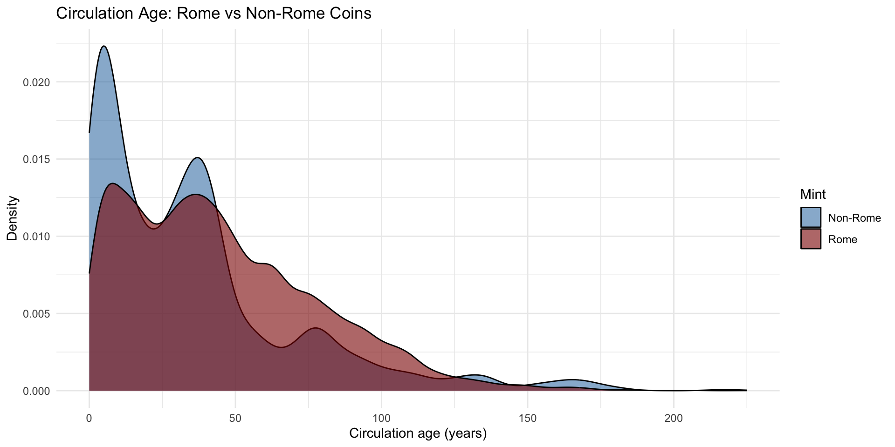
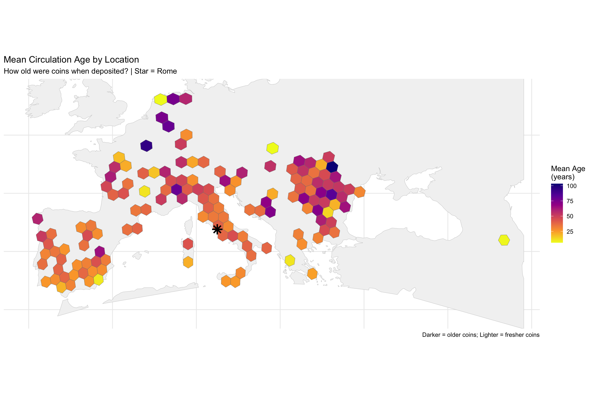
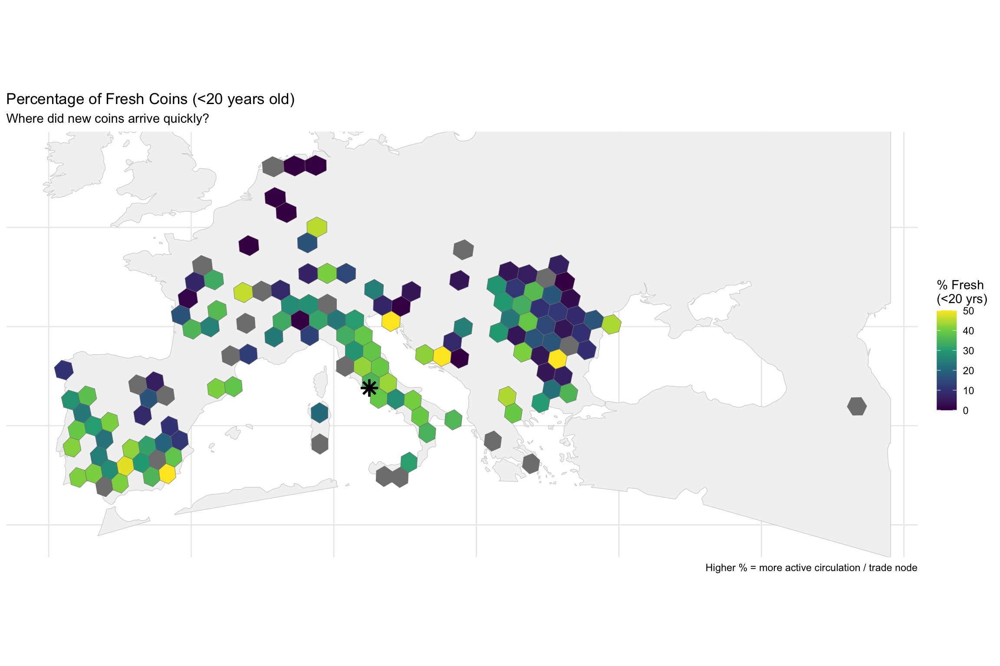
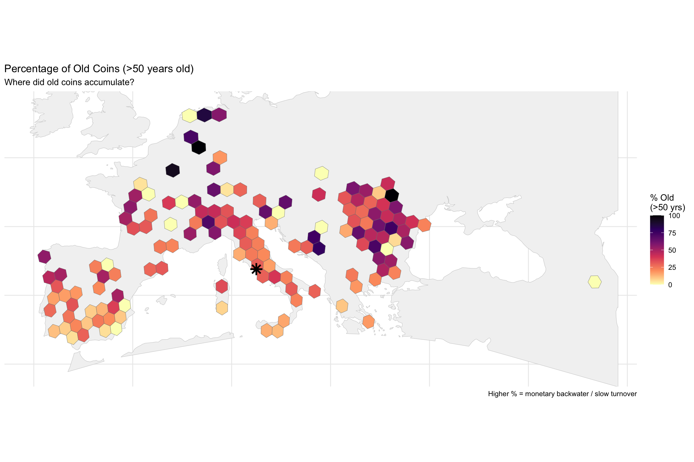
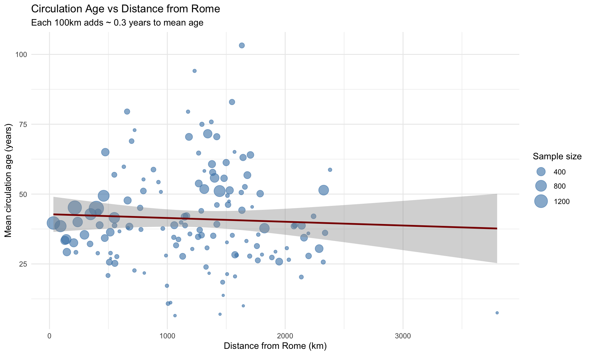
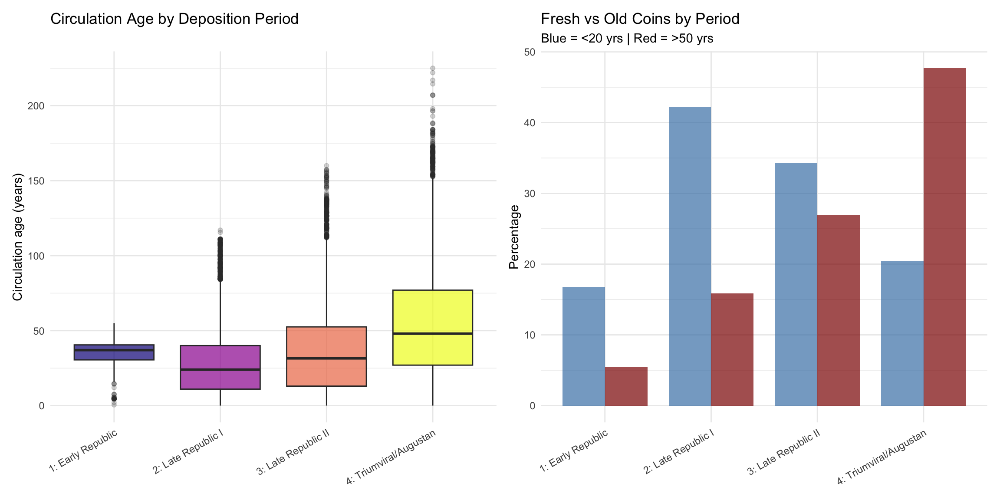
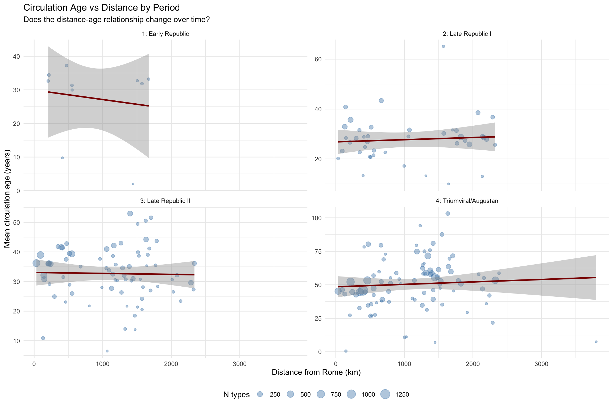
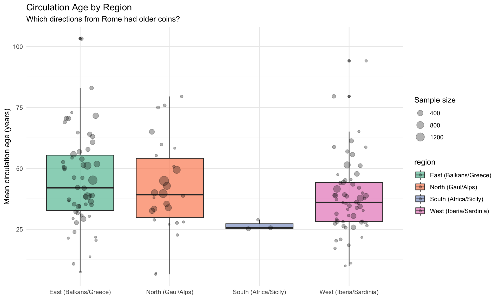

Code
library(tidyverse)
library(sf)
library(knitr)
library(patchwork)
theme_set(theme_minimal())Mapping How Long Coins Circulated Before Deposition
The circulation age of a coin is the time between when it was minted and when it was deposited in a hoard:
\[\text{Circulation Age} = \text{TPQ (deposition)} - \text{Mint Date (production)}\]
This metric reveals:
| Pattern | Interpretation |
|---|---|
| High mean age | Monetary backwater; old coins accumulate |
| Low mean age | Active trade node; fresh coins arrive regularly |
| High age variance | Mixed circulation; coins from many eras |
| Low age variance | Uniform replacement; consistent turnover |
library(tidyverse)
library(sf)
library(knitr)
library(patchwork)
theme_set(theme_minimal())chrr_file <- "/Users/john/Library/Mobile Documents/com~apple~CloudDocs/Home/John/GIS/Roman Italy GIS/Coin Project/data/chrr_data.csv"
data_loaded <- FALSE
if (file.exists(chrr_file)) {
chrr_raw <- read_csv(chrr_file, show_col_types = FALSE)
data_loaded <- TRUE
cat("✓ Loaded", nrow(chrr_raw), "rows\n")
} else {
alt_paths <- c(
"/mnt/user-data/uploads/chrr_data.csv",
"~/chrr_data.csv"
)
for (alt in alt_paths) {
if (file.exists(alt)) {
chrr_raw <- read_csv(alt, show_col_types = FALSE)
data_loaded <- TRUE
cat("✓ Loaded", nrow(chrr_raw), "rows from", alt, "\n")
break
}
}
}✓ Loaded 31951 rowsif (!data_loaded) {
cat("⚠ Data not found\n")
knitr::knit_exit()
}chrr_age <- chrr_raw %>%
mutate(
# Parse dates
mint_start = as.numeric(start_year),
mint_end = as.numeric(end_year),
mint_mid = (mint_start + mint_end) / 2,
tpq_year = readr::parse_number(as.character(hoard_tpq)),
# Circulation age
circ_age = tpq_year - mint_mid,
# Flag Rome mint
is_rome = mint_id == "rome" | str_detect(mint_uri, "/id/rome$"),
is_rome = replace_na(is_rome, FALSE)
) %>%
filter(
!is.na(circ_age),
!is.na(hoard_lat),
!is.na(hoard_long),
circ_age >= 0 # Exclude anomalies where TPQ < mint date
)
cat("Coin-types with valid circulation age:", nrow(chrr_age), "\n")Coin-types with valid circulation age: 29819 cat("Unique hoards:", n_distinct(chrr_age$hoard_id), "\n")Unique hoards: 463 age_summary <- chrr_age %>%
summarise(
n = n(),
mean_age = mean(circ_age),
median_age = median(circ_age),
sd_age = sd(circ_age),
q10 = quantile(circ_age, 0.10),
q25 = quantile(circ_age, 0.25),
q75 = quantile(circ_age, 0.75),
q90 = quantile(circ_age, 0.90),
max_age = max(circ_age)
)
kable(age_summary, digits = 1, caption = "Overall circulation age statistics (years)")| n | mean_age | median_age | sd_age | q10 | q25 | q75 | q90 | max_age |
|---|---|---|---|---|---|---|---|---|
| 29819 | 44.2 | 38 | 33.4 | 6 | 17 | 64 | 91 | 225 |
p1 <- ggplot(chrr_age, aes(x = circ_age)) +
geom_histogram(binwidth = 10, fill = "steelblue", color = "white", alpha = 0.8) +
geom_vline(xintercept = age_summary$median_age, color = "darkred",
linetype = "dashed", linewidth = 1) +
labs(
title = "Distribution of Circulation Ages",
subtitle = paste("Median =", round(age_summary$median_age, 0), "years"),
x = "Circulation age (years)",
y = "Count"
)
p2 <- ggplot(chrr_age, aes(x = circ_age)) +
geom_histogram(binwidth = 10, fill = "steelblue", color = "white", alpha = 0.8) +
scale_y_log10() +
labs(
title = "Distribution (log scale)",
subtitle = "Reveals long tail of very old coins",
x = "Circulation age (years)",
y = "Count (log)"
)
p1 + p2
age_by_mint <- chrr_age %>%
group_by(is_rome) %>%
summarise(
n = n(),
mean_age = mean(circ_age),
median_age = median(circ_age),
sd_age = sd(circ_age),
.groups = "drop"
) %>%
mutate(mint_type = ifelse(is_rome, "Rome", "Non-Rome"))
kable(age_by_mint, digits = 1, caption = "Circulation age by mint origin")| is_rome | n | mean_age | median_age | sd_age | mint_type |
|---|---|---|---|---|---|
| FALSE | 3050 | 35.4 | 27.5 | 35.7 | Non-Rome |
| TRUE | 26769 | 45.2 | 40.0 | 33.0 | Rome |
ggplot(chrr_age, aes(x = circ_age, fill = ifelse(is_rome, "Rome", "Non-Rome"))) +
geom_density(alpha = 0.6) +
scale_fill_manual(values = c("Rome" = "darkred", "Non-Rome" = "steelblue")) +
labs(
title = "Circulation Age: Rome vs Non-Rome Coins",
x = "Circulation age (years)",
y = "Density",
fill = "Mint"
)
library(rnaturalearth)
library(rnaturalearthdata)
# Convert to sf
hoard_sf <- st_as_sf(
chrr_age,
coords = c("hoard_long", "hoard_lat"),
crs = 4326,
remove = FALSE
)
# Study area
land <- ne_countries(scale = "medium", returnclass = "sf") %>% st_union()
hoard_bbox <- st_bbox(hoard_sf)
pad <- 2
study_extent <- st_polygon(list(rbind(
c(hoard_bbox["xmin"] - pad, hoard_bbox["ymin"] - pad),
c(hoard_bbox["xmax"] + pad, hoard_bbox["ymin"] - pad),
c(hoard_bbox["xmax"] + pad, hoard_bbox["ymax"] + pad),
c(hoard_bbox["xmin"] - pad, hoard_bbox["ymax"] + pad),
c(hoard_bbox["xmin"] - pad, hoard_bbox["ymin"] - pad)
))) %>% st_sfc(crs = 4326)
study_land <- st_intersection(land, study_extent)
# Project
target_crs <- 3035
hoard_sf_proj <- st_transform(hoard_sf, target_crs)
study_land_proj <- st_transform(study_land, target_crs)
rome_coords <- c(12.4964, 41.9028)
rome_sf <- st_as_sf(tibble(lon = rome_coords[1], lat = rome_coords[2]),
coords = c("lon", "lat"), crs = 4326) %>%
st_transform(target_crs)
# Hex grid
hex_size <- 100000
hex_grid <- st_make_grid(study_land_proj, cellsize = hex_size, square = FALSE) %>%
st_sf(hex_id = seq_along(.), geometry = .) %>%
st_set_crs(target_crs)
hex_land <- hex_grid %>%
filter(lengths(st_intersects(., study_land_proj)) > 0)
hex_centroids <- st_centroid(hex_land)
on_land <- lengths(st_intersects(hex_centroids, study_land_proj)) > 0
hex_land <- hex_land[on_land, ]
cat("Hexes on land:", nrow(hex_land), "\n")Hexes on land: 859 # Spatial join
hoard_hex <- st_join(hoard_sf_proj, hex_land, join = st_within) %>%
filter(!is.na(hex_id))
# Aggregate by hex
hex_age <- hoard_hex %>%
st_drop_geometry() %>%
group_by(hex_id) %>%
summarise(
n_types = n(),
n_hoards = n_distinct(hoard_id),
mean_age = mean(circ_age),
median_age = median(circ_age),
sd_age = sd(circ_age),
q25_age = quantile(circ_age, 0.25),
q75_age = quantile(circ_age, 0.75),
age_iqr = q75_age - q25_age,
pct_old = mean(circ_age > 50) * 100, # % coins > 50 years old
pct_fresh = mean(circ_age < 20) * 100, # % coins < 20 years old
.groups = "drop"
)
cat("Hexes with data:", nrow(hex_age), "\n")Hexes with data: 141 # Hex centroids in WGS84
hex_centroids_wgs <- hex_land %>%
st_centroid() %>%
st_transform(4326)
cent_coords <- st_coordinates(hex_centroids_wgs)
hex_coords <- tibble(
hex_id = hex_land$hex_id,
cent_lon = cent_coords[, 1],
cent_lat = cent_coords[, 2]
) %>%
mutate(
dist_rome_km = sqrt((cent_lon - rome_coords[1])^2 +
(cent_lat - rome_coords[2])^2) * 111
)
hex_age <- hex_age %>%
left_join(hex_coords, by = "hex_id")hex_age_sf <- hex_land %>%
inner_join(hex_age, by = "hex_id") %>%
st_transform(4326)
land_wgs <- st_transform(study_land_proj, 4326)
rome_wgs <- st_transform(rome_sf, 4326)
ggplot() +
geom_sf(data = land_wgs, fill = "grey95", color = "grey80") +
geom_sf(
data = hex_age_sf,
aes(fill = mean_age),
color = "grey50",
linewidth = 0.15
) +
geom_sf(data = rome_wgs, color = "black", shape = 8, size = 4, stroke = 1.5) +
scale_fill_viridis_c(
name = "Mean Age\n(years)",
option = "plasma",
direction = -1
) +
coord_sf(
xlim = c(hoard_bbox["xmin"] - 1, hoard_bbox["xmax"] + 1),
ylim = c(hoard_bbox["ymin"] - 1, hoard_bbox["ymax"] + 1)
) +
labs(
title = "Mean Circulation Age by Location",
subtitle = "How old were coins when deposited? | Star = Rome",
caption = "Darker = older coins; Lighter = fresher coins"
) +
theme_minimal() +
theme(
axis.text = element_blank(),
axis.title = element_blank()
)
ggplot() +
geom_sf(data = land_wgs, fill = "grey95", color = "grey80") +
geom_sf(
data = hex_age_sf,
aes(fill = pct_fresh),
color = "grey50",
linewidth = 0.15
) +
geom_sf(data = rome_wgs, color = "black", shape = 8, size = 4, stroke = 1.5) +
scale_fill_viridis_c(
name = "% Fresh\n(<20 yrs)",
option = "viridis",
limits = c(0, 50)
) +
coord_sf(
xlim = c(hoard_bbox["xmin"] - 1, hoard_bbox["xmax"] + 1),
ylim = c(hoard_bbox["ymin"] - 1, hoard_bbox["ymax"] + 1)
) +
labs(
title = "Percentage of Fresh Coins (<20 years old)",
subtitle = "Where did new coins arrive quickly?",
caption = "Higher % = more active circulation / trade node"
) +
theme_minimal() +
theme(
axis.text = element_blank(),
axis.title = element_blank()
)
ggplot() +
geom_sf(data = land_wgs, fill = "grey95", color = "grey80") +
geom_sf(
data = hex_age_sf,
aes(fill = pct_old),
color = "grey50",
linewidth = 0.15
) +
geom_sf(data = rome_wgs, color = "black", shape = 8, size = 4, stroke = 1.5) +
scale_fill_viridis_c(
name = "% Old\n(>50 yrs)",
option = "magma",
direction = -1
) +
coord_sf(
xlim = c(hoard_bbox["xmin"] - 1, hoard_bbox["xmax"] + 1),
ylim = c(hoard_bbox["ymin"] - 1, hoard_bbox["ymax"] + 1)
) +
labs(
title = "Percentage of Old Coins (>50 years old)",
subtitle = "Where did old coins accumulate?",
caption = "Higher % = monetary backwater / slow turnover"
) +
theme_minimal() +
theme(
axis.text = element_blank(),
axis.title = element_blank()
)
# Linear regression
lm_age <- lm(mean_age ~ dist_rome_km, data = hex_age, weights = n_types)
summary(lm_age)
Call:
lm(formula = mean_age ~ dist_rome_km, data = hex_age, weights = n_types)
Weighted Residuals:
Min 1Q Median 3Q Max
-337.08 -104.90 -51.50 59.81 548.01
Coefficients:
Estimate Std. Error t value Pr(>|t|)
(Intercept) 41.313878 1.670319 24.734 <2e-16 ***
dist_rome_km 0.003103 0.001444 2.149 0.0334 *
---
Signif. codes: 0 '***' 0.001 '**' 0.01 '*' 0.05 '.' 0.1 ' ' 1
Residual standard error: 158.3 on 139 degrees of freedom
Multiple R-squared: 0.03215, Adjusted R-squared: 0.02519
F-statistic: 4.618 on 1 and 139 DF, p-value: 0.03337# Extract coefficients
coef_dist <- coef(lm_age)["dist_rome_km"]
cat("\nEffect: Each 100km from Rome adds", round(coef_dist * 100, 2), "years to mean circulation age\n")
Effect: Each 100km from Rome adds 0.31 years to mean circulation ageggplot(hex_age, aes(x = dist_rome_km, y = mean_age)) +
geom_point(aes(size = n_types), alpha = 0.6, color = "steelblue") +
geom_smooth(method = "lm", color = "darkred", se = TRUE) +
scale_size_continuous(name = "Sample size", range = c(1, 8)) +
labs(
title = "Circulation Age vs Distance from Rome",
subtitle = paste("Each 100km adds ~", round(coef_dist * 100, 1), "years to mean age"),
x = "Distance from Rome (km)",
y = "Mean circulation age (years)"
)
period_breaks <- c(-Inf, -150, -100, -50, 14, Inf)
period_labels <- c("1: Early Republic", "2: Late Republic I",
"3: Late Republic II", "4: Triumviral/Augustan",
"5: Early Imperial")
chrr_age_period <- chrr_age %>%
mutate(
tpq_period = cut(tpq_year, breaks = period_breaks,
labels = period_labels, right = TRUE)
) %>%
filter(!is.na(tpq_period))
age_by_period <- chrr_age_period %>%
group_by(tpq_period) %>%
summarise(
n = n(),
mean_age = mean(circ_age),
median_age = median(circ_age),
sd_age = sd(circ_age),
pct_fresh = mean(circ_age < 20) * 100,
pct_old = mean(circ_age > 50) * 100,
.groups = "drop"
)
kable(age_by_period, digits = 1,
caption = "Circulation age by deposition period")| tpq_period | n | mean_age | median_age | sd_age | pct_fresh | pct_old |
|---|---|---|---|---|---|---|
| 1: Early Republic | 185 | 32.2 | 37.0 | 13.0 | 16.8 | 5.4 |
| 2: Late Republic I | 4325 | 29.9 | 24.0 | 25.4 | 42.2 | 15.8 |
| 3: Late Republic II | 9801 | 36.5 | 31.5 | 28.5 | 34.3 | 26.9 |
| 4: Triumviral/Augustan | 15508 | 53.2 | 48.0 | 35.7 | 20.4 | 47.7 |
p1 <- ggplot(chrr_age_period, aes(x = tpq_period, y = circ_age, fill = tpq_period)) +
geom_boxplot(alpha = 0.7, outlier.alpha = 0.2) +
scale_fill_viridis_d(option = "plasma") +
labs(
title = "Circulation Age by Deposition Period",
x = NULL,
y = "Circulation age (years)"
) +
theme(
axis.text.x = element_text(angle = 30, hjust = 1),
legend.position = "none"
)
p2 <- ggplot(age_by_period, aes(x = tpq_period)) +
geom_col(aes(y = pct_fresh), fill = "steelblue", alpha = 0.7, width = 0.4,
position = position_nudge(x = -0.2)) +
geom_col(aes(y = pct_old), fill = "darkred", alpha = 0.7, width = 0.4,
position = position_nudge(x = 0.2)) +
labs(
title = "Fresh vs Old Coins by Period",
subtitle = "Blue = <20 yrs | Red = >50 yrs",
x = NULL,
y = "Percentage"
) +
theme(axis.text.x = element_text(angle = 30, hjust = 1))
p1 + p2
# Aggregate by hex and period
hex_period_age <- hoard_hex %>%
st_drop_geometry() %>%
mutate(
tpq_period = cut(tpq_year, breaks = period_breaks,
labels = period_labels, right = TRUE)
) %>%
filter(!is.na(tpq_period)) %>%
group_by(hex_id, tpq_period) %>%
summarise(
n_types = n(),
mean_age = mean(circ_age),
.groups = "drop"
) %>%
left_join(hex_coords, by = "hex_id")
# Regression by period
period_distance_models <- hex_period_age %>%
group_by(tpq_period) %>%
nest() %>%
mutate(
model = map(data, ~lm(mean_age ~ dist_rome_km, data = .x, weights = n_types)),
tidy = map(model, broom::tidy)
) %>%
unnest(tidy) %>%
filter(term == "dist_rome_km") %>%
dplyr::select(tpq_period, estimate, std.error, p.value) %>%
mutate(
effect_100km = estimate * 100,
sig = ifelse(p.value < 0.05, "*", "")
)
kable(period_distance_models, digits = c(0, 4, 4, 4, 2, 0),
col.names = c("Period", "Coef", "SE", "p-value", "Years/100km", "Sig"),
caption = "Distance effect on circulation age by period")| Period | Coef | SE | p-value | Years/100km | Sig |
|---|---|---|---|---|---|
| 2: Late Republic I | -0.0006 | 0.0011 | 0.5938 | -0.06 | |
| 3: Late Republic II | 0.0001 | 0.0012 | 0.9628 | 0.01 | |
| 4: Triumviral/Augustan | 0.0065 | 0.0019 | 0.0009 | 0.65 | * |
| 1: Early Republic | -0.0007 | 0.0028 | 0.8011 | -0.07 |
ggplot(hex_period_age, aes(x = dist_rome_km, y = mean_age)) +
geom_point(aes(size = n_types), alpha = 0.4, color = "steelblue") +
geom_smooth(method = "lm", color = "darkred", se = TRUE) +
facet_wrap(~tpq_period, ncol = 2, scales = "free_y") +
scale_size_continuous(name = "N types", range = c(1, 6)) +
labs(
title = "Circulation Age vs Distance by Period",
subtitle = "Does the distance-age relationship change over time?",
x = "Distance from Rome (km)",
y = "Mean circulation age (years)"
) +
theme(legend.position = "bottom")
hex_age <- hex_age %>%
mutate(
# Bearing from Rome (degrees)
bearing = atan2(cent_lon - rome_coords[1], cent_lat - rome_coords[2]) * 180 / pi,
bearing = ifelse(bearing < 0, bearing + 360, bearing),
# Regional sectors
region = case_when(
bearing >= 315 | bearing < 45 ~ "North (Gaul/Alps)",
bearing >= 45 & bearing < 135 ~ "East (Balkans/Greece)",
bearing >= 135 & bearing < 225 ~ "South (Africa/Sicily)",
bearing >= 225 & bearing < 315 ~ "West (Iberia/Sardinia)"
)
)
region_summary <- hex_age %>%
group_by(region) %>%
summarise(
n_hexes = n(),
mean_dist = mean(dist_rome_km),
mean_age = weighted.mean(mean_age, n_types),
mean_pct_fresh = weighted.mean(pct_fresh, n_types),
mean_pct_old = weighted.mean(pct_old, n_types),
.groups = "drop"
)
kable(region_summary, digits = 1, caption = "Circulation patterns by region")| region | n_hexes | mean_dist | mean_age | mean_pct_fresh | mean_pct_old |
|---|---|---|---|---|---|
| East (Balkans/Greece) | 54 | 1234.5 | 48.5 | 23.0 | 41.6 |
| North (Gaul/Alps) | 26 | 661.5 | 42.3 | 31.7 | 34.2 |
| South (Africa/Sicily) | 3 | 526.8 | 25.7 | 51.7 | 12.8 |
| West (Iberia/Sardinia) | 58 | 1501.0 | 40.7 | 30.1 | 30.6 |
ggplot(hex_age, aes(x = region, y = mean_age, fill = region)) +
geom_boxplot(alpha = 0.7) +
geom_jitter(aes(size = n_types), alpha = 0.3, width = 0.2) +
scale_fill_brewer(palette = "Set2") +
scale_size_continuous(name = "Sample size", range = c(1, 6)) +
labs(
title = "Circulation Age by Region",
subtitle = "Which directions from Rome had older coins?",
x = NULL,
y = "Mean circulation age (years)"
) +
theme(legend.position = "right")
cat("
================================================================
CIRCULATION AGE ANALYSIS: KEY FINDINGS
================================================================
1. OVERALL CIRCULATION PATTERNS
")
================================================================
CIRCULATION AGE ANALYSIS: KEY FINDINGS
================================================================
1. OVERALL CIRCULATION PATTERNScat(" Mean circulation age:", round(age_summary$mean_age, 1), "years\n") Mean circulation age: 44.2 yearscat(" Median circulation age:", round(age_summary$median_age, 1), "years\n") Median circulation age: 38 yearscat(" 10th percentile:", round(age_summary$q10, 1), "years\n") 10th percentile: 6 yearscat(" 90th percentile:", round(age_summary$q90, 1), "years\n") 90th percentile: 91 yearscat("
2. DISTANCE EFFECT
")
2. DISTANCE EFFECTcat(" Each 100km from Rome adds ~", round(coef_dist * 100, 1), "years\n") Each 100km from Rome adds ~ 0.3 yearscat(" Interpretation: Coins took longer to reach peripheral areas\n") Interpretation: Coins took longer to reach peripheral areascat("
3. ROME vs NON-ROME COINS
")
3. ROME vs NON-ROME COINScat(" Rome coins mean age:", round(age_by_mint$mean_age[age_by_mint$is_rome], 1), "years\n") Rome coins mean age: 45.2 yearscat(" Non-Rome coins mean age:", round(age_by_mint$mean_age[!age_by_mint$is_rome], 1), "years\n") Non-Rome coins mean age: 35.4 yearscat("
4. IMPLICATIONS
- Peripheral regions accumulated older coins
- Core areas (near Rome) had fresher coinage
- This suggests radial diffusion from Rome
- Circulation velocity declined with distance
================================================================
")
4. IMPLICATIONS
- Peripheral regions accumulated older coins
- Core areas (near Rome) had fresher coinage
- This suggests radial diffusion from Rome
- Circulation velocity declined with distance
================================================================write_csv(hex_age, "hex_circulation_age.csv")
cat("Exported:", nrow(hex_age), "hexes with circulation age data\n")Exported: 141 hexes with circulation age datasessionInfo()R version 4.5.1 (2025-06-13)
Platform: aarch64-apple-darwin20
Running under: macOS Sequoia 15.7.1
Matrix products: default
BLAS: /Library/Frameworks/R.framework/Versions/4.5-arm64/Resources/lib/libRblas.0.dylib
LAPACK: /Library/Frameworks/R.framework/Versions/4.5-arm64/Resources/lib/libRlapack.dylib; LAPACK version 3.12.1
locale:
[1] en_US.UTF-8/en_US.UTF-8/en_US.UTF-8/C/en_US.UTF-8/en_US.UTF-8
time zone: America/Chicago
tzcode source: internal
attached base packages:
[1] stats graphics grDevices utils datasets methods base
other attached packages:
[1] rnaturalearthdata_1.0.0 rnaturalearth_1.1.0 patchwork_1.3.2
[4] knitr_1.50 sf_1.0-23 lubridate_1.9.4
[7] forcats_1.0.1 stringr_1.6.0 dplyr_1.1.4
[10] purrr_1.2.0 readr_2.1.6 tidyr_1.3.1
[13] tibble_3.3.0 ggplot2_4.0.1 tidyverse_2.0.0
loaded via a namespace (and not attached):
[1] gtable_0.3.6 xfun_0.55 htmlwidgets_1.6.4 lattice_0.22-7
[5] tzdb_0.5.0 vctrs_0.6.5 tools_4.5.1 generics_0.1.4
[9] parallel_4.5.1 proxy_0.4-28 pkgconfig_2.0.3 Matrix_1.7-4
[13] KernSmooth_2.23-26 RColorBrewer_1.1-3 S7_0.2.1 lifecycle_1.0.4
[17] compiler_4.5.1 farver_2.1.2 htmltools_0.5.9 class_7.3-23
[21] yaml_2.3.12 pillar_1.11.1 crayon_1.5.3 classInt_0.4-11
[25] wk_0.9.4 nlme_3.1-168 tidyselect_1.2.1 digest_0.6.39
[29] stringi_1.8.7 labeling_0.4.3 splines_4.5.1 fastmap_1.2.0
[33] grid_4.5.1 cli_3.6.5 magrittr_2.0.4 broom_1.0.11
[37] e1071_1.7-16 withr_3.0.2 backports_1.5.0 scales_1.4.0
[41] bit64_4.6.0-1 timechange_0.3.0 rmarkdown_2.30 bit_4.6.0
[45] hms_1.1.4 evaluate_1.0.5 viridisLite_0.4.2 mgcv_1.9-4
[49] s2_1.1.9 rlang_1.1.6 Rcpp_1.1.0 glue_1.8.0
[53] DBI_1.2.3 rstudioapi_0.17.1 vroom_1.6.7 jsonlite_2.0.0
[57] R6_2.6.1 units_1.0-0